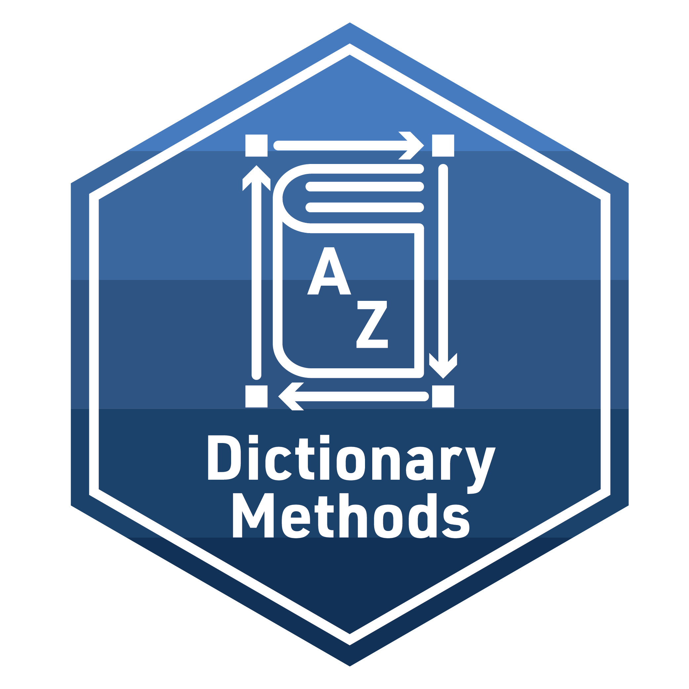
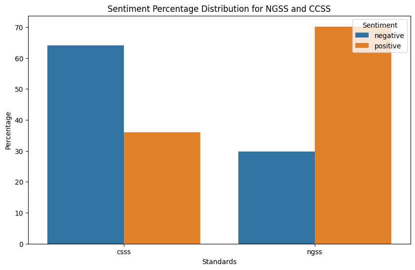

# YOUR FINAL CODE HERElab-2-case-study-python-v1

The final activity for each learning lab provides space to work with data and to reflect on how the concepts and techniques introduced in each lab might apply to your own research.
To earn a badge for each lab, you are required to respond to a set of prompts for two parts:
In Part I, you will reflect on your understanding of key concepts and begin to think about potential next steps for your own study.
In Part II, you will create a simple data product in R that demonstrates your ability to apply a data analysis technique introduced in this learning lab.
Part I: Reflect and Plan
Use the institutional library (e.g. NCSU Library), Google Scholar or search engine to locate a research article, presentation, or resource that applies text mining to an educational context or topic of interest. More specifically, locate a text mining study that visualize text data.
Provide an APA citation for your selected study.
How does the sentiment analysis address research questions?
Draft a research question for a population you may be interested in studying, or that would be of interest to educational researchers, and that would require the collection of text data and answer the following questions:
What text data would need to be collected?
For what reason would text data need to be collected in order to address this question?
Explain the analytical level at which these text data would need to be collected and analyzed.
Part II: Data Product
Use your case study file to create small multiples like the following figure:

I highly recommend creating a new Python script in your lab-2 folder to complete this task. When your code is ready to share, use the code chunk below to share the final code for your model and answer the questions that follow.
!pip install pandas openpyxl langid nltk matplotlib seaborn
import pandas as pd
import openpyxl
import langid
import nltk
import matplotlib.pyplot as plt
import seaborn as snsRequirement already satisfied: pandas in /cloud/project/r-reticulate/lib/python3.11/site-packages (2.2.2)
Requirement already satisfied: openpyxl in /cloud/project/r-reticulate/lib/python3.11/site-packages (3.1.2)
Requirement already satisfied: langid in /cloud/project/r-reticulate/lib/python3.11/site-packages (1.1.6)
Requirement already satisfied: nltk in /cloud/project/r-reticulate/lib/python3.11/site-packages (3.8.1)
Requirement already satisfied: matplotlib in /cloud/project/r-reticulate/lib/python3.11/site-packages (3.9.0)
Requirement already satisfied: seaborn in /cloud/project/r-reticulate/lib/python3.11/site-packages (0.13.2)
Requirement already satisfied: numpy>=1.23.2 in /cloud/project/r-reticulate/lib/python3.11/site-packages (from pandas) (1.26.4)
Requirement already satisfied: python-dateutil>=2.8.2 in /cloud/project/r-reticulate/lib/python3.11/site-packages (from pandas) (2.9.0.post0)
Requirement already satisfied: pytz>=2020.1 in /cloud/project/r-reticulate/lib/python3.11/site-packages (from pandas) (2024.1)
Requirement already satisfied: tzdata>=2022.7 in /cloud/project/r-reticulate/lib/python3.11/site-packages (from pandas) (2024.1)
Requirement already satisfied: et-xmlfile in /cloud/project/r-reticulate/lib/python3.11/site-packages (from openpyxl) (1.1.0)
Requirement already satisfied: click in /cloud/project/r-reticulate/lib/python3.11/site-packages (from nltk) (8.1.7)
Requirement already satisfied: joblib in /cloud/project/r-reticulate/lib/python3.11/site-packages (from nltk) (1.4.2)
Requirement already satisfied: regex>=2021.8.3 in /cloud/project/r-reticulate/lib/python3.11/site-packages (from nltk) (2024.5.15)
Requirement already satisfied: tqdm in /cloud/project/r-reticulate/lib/python3.11/site-packages (from nltk) (4.66.2)
Requirement already satisfied: contourpy>=1.0.1 in /cloud/project/r-reticulate/lib/python3.11/site-packages (from matplotlib) (1.2.1)
Requirement already satisfied: cycler>=0.10 in /cloud/project/r-reticulate/lib/python3.11/site-packages (from matplotlib) (0.12.1)
Requirement already satisfied: fonttools>=4.22.0 in /cloud/project/r-reticulate/lib/python3.11/site-packages (from matplotlib) (4.53.0)
Requirement already satisfied: kiwisolver>=1.3.1 in /cloud/project/r-reticulate/lib/python3.11/site-packages (from matplotlib) (1.4.5)
Requirement already satisfied: packaging>=20.0 in /cloud/project/r-reticulate/lib/python3.11/site-packages (from matplotlib) (24.0)
Requirement already satisfied: pillow>=8 in /cloud/project/r-reticulate/lib/python3.11/site-packages (from matplotlib) (10.3.0)
Requirement already satisfied: pyparsing>=2.3.1 in /cloud/project/r-reticulate/lib/python3.11/site-packages (from matplotlib) (3.1.2)
Requirement already satisfied: six>=1.5 in /cloud/project/r-reticulate/lib/python3.11/site-packages (from python-dateutil>=2.8.2->pandas) (1.16.0)
[notice] A new release of pip is available: 24.0 -> 24.1.2
[notice] To update, run: pip install --upgrade pip# Read data
ngss_tweets = pd.read_excel('data/ngss_tweets.xlsx')
csss_tweets = pd.read_excel('data/csss_tweets.xlsx')
# Filter ngss tweets in English
ngss_text = ngss_tweets[ngss_tweets['text'].apply(lambda x: isinstance(x, str) and len(x.strip()) > 0 and langid.classify(x)[0] == 'en')]
# Add a new column 'standards' with the value 'ngss'
ngss_text = ngss_text.assign(standards='ngss')
# Subset columns
ngss_text = ngss_text[['standards', 'screen_name', 'created_at', 'text']]
# Filter csss tweets in English
csss_text = csss_tweets[csss_tweets['text'].apply(lambda x: isinstance(x, str) and len(x.strip()) > 0 and langid.classify(x)[0] == 'en')]
# Add a new column 'standards' with the value 'csss'
csss_text = csss_text.assign(standards='csss')
# Subset columns of interest
csss_text = csss_text[['standards', 'screen_name', 'created_at', 'text']]
# Combine the two DataFrames row-wise
tweets = pd.concat([ngss_text, csss_text], ignore_index=True)
# Display the combined DataFrame
print(tweets) standards screen_name created_at \
0 ngss loyr2662 2021-02-27 17:33:27
1 ngss loyr2662 2021-02-20 20:02:37
2 ngss Furlow_teach 2021-02-27 17:03:23
3 ngss Furlow_teach 2021-02-27 14:41:01
4 ngss TdiShelton 2021-02-27 14:17:34
... ... ... ...
1444 csss ctwittnc 2021-02-19 23:44:18
1445 csss the_rbeagle 2021-02-19 23:27:06
1446 csss silea 2021-02-19 23:11:21
1447 csss JodyCoyote12 2021-02-19 22:58:25
1448 csss Ryan_Hawes 2021-02-19 22:41:01
text
0 Switching gears for a bit for the "Crosscuttin...
1 Was just introduced to the Engineering Habits ...
2 @IBchemmilam @chemmastercorey I’m familiar w/ ...
3 @IBchemmilam @chemmastercorey How well does th...
4 I am so honored and appreciative to have an op...
... ...
1444 @winningatmylife I’ll bet none of these except...
1445 @dmarush @electronlove @MontgomeryJen @TheReal...
1446 @LizerReal I don’t think that’s in Common Core...
1447 @CarlaRK3 @NedLamont Fully fund public schools...
1448 I just got an "explainer" on how to read my ch...
[1449 rows x 4 columns]from nltk.tokenize import RegexpTokenizer
from nltk.corpus import stopwords
# Ensure nltk punkt tokenizer is downloaded
nltk.download('punkt')
# Create a tokenizer instance with the regular expression of tweets
tweet_pattern = r'\b\w+\b'
tokenizer = RegexpTokenizer(tweet_pattern)
# Create preprocess_text function
def preprocess_text(text):
# Tokenize the text
tokens = tokenizer.tokenize(text.lower())
# Remove stop words
filtered_tokens = [token for token in tokens if token not in stopwords.words('english')]
# Join the tokens back into a string
processed_text = ' '.join(filtered_tokens)
return processed_text
# Apply the function to the 'text' column
tweets['clean_text'] = tweets['text'].apply(preprocess_text)
# Display the clean DataFrame
print(tweets)[nltk_data] Downloading package punkt to /home/r1592218/nltk_data...
[nltk_data] Package punkt is already up-to-date! standards screen_name created_at \
0 ngss loyr2662 2021-02-27 17:33:27
1 ngss loyr2662 2021-02-20 20:02:37
2 ngss Furlow_teach 2021-02-27 17:03:23
3 ngss Furlow_teach 2021-02-27 14:41:01
4 ngss TdiShelton 2021-02-27 14:17:34
... ... ... ...
1444 csss ctwittnc 2021-02-19 23:44:18
1445 csss the_rbeagle 2021-02-19 23:27:06
1446 csss silea 2021-02-19 23:11:21
1447 csss JodyCoyote12 2021-02-19 22:58:25
1448 csss Ryan_Hawes 2021-02-19 22:41:01
text \
0 Switching gears for a bit for the "Crosscuttin...
1 Was just introduced to the Engineering Habits ...
2 @IBchemmilam @chemmastercorey I’m familiar w/ ...
3 @IBchemmilam @chemmastercorey How well does th...
4 I am so honored and appreciative to have an op...
... ...
1444 @winningatmylife I’ll bet none of these except...
1445 @dmarush @electronlove @MontgomeryJen @TheReal...
1446 @LizerReal I don’t think that’s in Common Core...
1447 @CarlaRK3 @NedLamont Fully fund public schools...
1448 I just got an "explainer" on how to read my ch...
clean_text
0 switching gears bit crosscutting concepts sess...
1 introduced engineering habits mind know ngss s...
2 ibchemmilam chemmastercorey familiar w would l...
3 ibchemmilam chemmastercorey well align ngss
4 honored appreciative opportunity learn ky educ...
... ...
1444 winningatmylife bet none exceptional people st...
1445 dmarush electronlove montgomeryjen therealhoar...
1446 lizerreal think common core middle school
1447 carlark3 nedlamont fully fund public schools i...
1448 got explainer read child report card get expla...
[1449 rows x 5 columns]from nltk.sentiment.vader import SentimentIntensityAnalyzer
# Ensure vader_lexicon is downloaded
nltk.download('vader_lexicon')
# Initialize nltk sentiment analyzer
analyzer = SentimentIntensityAnalyzer()
# Get sentiment values of tweets['clean_text']
tweets['sentiment_value'] = tweets['clean_text'].apply(lambda txt: analyzer.polarity_scores(txt))
# Separate the sentiment_value into four columns
tweets['negative'] = tweets['sentiment_value'].apply(lambda txt: txt['neg'])
tweets['neutral'] = tweets['sentiment_value'].apply(lambda txt: txt['neu'])
tweets['positive'] = tweets['sentiment_value'].apply(lambda txt: txt['pos'])
tweets['compound'] = tweets['sentiment_value'].apply(lambda txt: txt['compound'])
# Display the DataFrame with sentiment values
print(tweets)[nltk_data] Downloading package vader_lexicon to
[nltk_data] /home/r1592218/nltk_data...
[nltk_data] Package vader_lexicon is already up-to-date! standards screen_name created_at \
0 ngss loyr2662 2021-02-27 17:33:27
1 ngss loyr2662 2021-02-20 20:02:37
2 ngss Furlow_teach 2021-02-27 17:03:23
3 ngss Furlow_teach 2021-02-27 14:41:01
4 ngss TdiShelton 2021-02-27 14:17:34
... ... ... ...
1444 csss ctwittnc 2021-02-19 23:44:18
1445 csss the_rbeagle 2021-02-19 23:27:06
1446 csss silea 2021-02-19 23:11:21
1447 csss JodyCoyote12 2021-02-19 22:58:25
1448 csss Ryan_Hawes 2021-02-19 22:41:01
text \
0 Switching gears for a bit for the "Crosscuttin...
1 Was just introduced to the Engineering Habits ...
2 @IBchemmilam @chemmastercorey I’m familiar w/ ...
3 @IBchemmilam @chemmastercorey How well does th...
4 I am so honored and appreciative to have an op...
... ...
1444 @winningatmylife I’ll bet none of these except...
1445 @dmarush @electronlove @MontgomeryJen @TheReal...
1446 @LizerReal I don’t think that’s in Common Core...
1447 @CarlaRK3 @NedLamont Fully fund public schools...
1448 I just got an "explainer" on how to read my ch...
clean_text \
0 switching gears bit crosscutting concepts sess...
1 introduced engineering habits mind know ngss s...
2 ibchemmilam chemmastercorey familiar w would l...
3 ibchemmilam chemmastercorey well align ngss
4 honored appreciative opportunity learn ky educ...
... ...
1444 winningatmylife bet none exceptional people st...
1445 dmarush electronlove montgomeryjen therealhoar...
1446 lizerreal think common core middle school
1447 carlark3 nedlamont fully fund public schools i...
1448 got explainer read child report card get expla...
sentiment_value negative neutral \
0 {'neg': 0.0, 'neu': 0.725, 'pos': 0.275, 'comp... 0.000 0.725
1 {'neg': 0.0, 'neu': 1.0, 'pos': 0.0, 'compound... 0.000 1.000
2 {'neg': 0.038, 'neu': 0.655, 'pos': 0.307, 'co... 0.038 0.655
3 {'neg': 0.0, 'neu': 0.656, 'pos': 0.344, 'comp... 0.000 0.656
4 {'neg': 0.0, 'neu': 0.532, 'pos': 0.468, 'comp... 0.000 0.532
... ... ... ...
1444 {'neg': 0.069, 'neu': 0.931, 'pos': 0.0, 'comp... 0.069 0.931
1445 {'neg': 0.1, 'neu': 0.631, 'pos': 0.269, 'comp... 0.100 0.631
1446 {'neg': 0.0, 'neu': 1.0, 'pos': 0.0, 'compound... 0.000 1.000
1447 {'neg': 0.0, 'neu': 0.776, 'pos': 0.224, 'comp... 0.000 0.776
1448 {'neg': 0.0, 'neu': 0.689, 'pos': 0.311, 'comp... 0.000 0.689
positive compound
0 0.275 0.5859
1 0.000 0.0000
2 0.307 0.8935
3 0.344 0.2732
4 0.468 0.9493
... ... ...
1444 0.000 -0.1027
1445 0.269 0.6249
1446 0.000 0.0000
1447 0.224 0.6705
1448 0.311 0.7755
[1449 rows x 10 columns]# Function to calculate sentiment category based on compound score
def get_sentiment(compound):
if compound > 0:
return 'positive'
else:
return 'negative'
# Apply the get_sentiment function
tweets['sentiment_category'] = tweets['compound'].apply(get_sentiment)
# Group by 'standards' and 'sentiment_category' to get counts
sentiment2_counts = tweets.groupby(['standards', 'sentiment_category']).size().reset_index(name='count')
# Pivot the table to get a clearer view
sentiment2_counts_pivot = sentiment2_counts.pivot(index='standards', columns='sentiment_category', values='count').fillna(0).reset_index()
# Display the sentiment counts
print(sentiment2_counts_pivot)sentiment_category standards negative positive
0 csss 722 405
1 ngss 96 226# Calculate the total counts for each standard
total_counts = sentiment2_counts.groupby('standards')['count'].sum().reset_index()
total_counts = total_counts.rename(columns={'count': 'total'})
# Merge the total counts back to the original dataframe
sentiment2_percentage = sentiment2_counts.merge(total_counts, on='standards')
# Calculate the percentage
sentiment2_percentage['percentage'] = (sentiment2_percentage['count'] / sentiment2_percentage['total']) * 100
# Plot the stacked bar chart
plt.figure(figsize=(10, 6))
sns.barplot(data=sentiment2_percentage, x='standards', y='percentage', hue='sentiment_category')
# Add labels and title
plt.xlabel('Standards')
plt.ylabel('Percentage')
plt.title('Sentiment Percentage Distribution for NGSS and CCSS')
plt.legend(title='Sentiment', loc='upper right')
# Display the plot
plt.show()Knit & Submit
Congratulations, you’ve completed your Intro to text mining Badge! Complete the following steps in the orientation to submit your work for review.